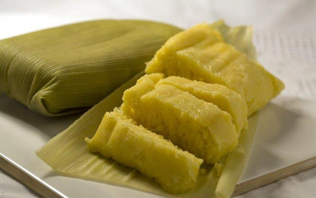

Pamonha

Esse é um prato típico no interior, mas na época das festas juninas fica ainda mais em evidência, pois em qualquer barraquinha de festas é possível encontrar. Aprenda agora a melhor Receita de Pamonha.
Ingredientes
- 12 espigas de milho verde
- 2 copos de água
- 2 xícaras de açúcar
- 1 xícara de coco ralado
- 1 pitada de sal
- Palha de milho para embalar
Modo de Preparo
- Rale as espigas rente ao sabugo. Bata o milho e a água no liquidificador.
- Acrescente o coco, o açúcar e mexa bem.
- Coloque a massa na palha de milho e amarre.
- Coloque numa panela, ferva bem a água e coloque as pamonhas. OBS: a água tem que ser fervente.
- Retire as pamonhas com o auxílio de uma escumadeira.
- Deixe esfriar por 40 minutos.
- Sirva em seguida.
Voltar para o início